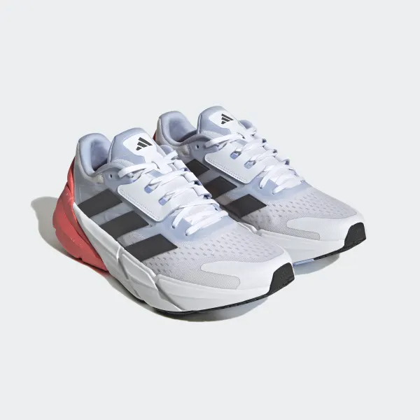

|
LONG-DISTANCE RUNNING
SHOES MADE IN PART
WITH PARLEY OCEAN
PLASTIC.
There's a lot more to long-distance running than just
getting from here to there. It's about the breeze at your
back, the rhythm of your stride, the freedom of the open
road. These adidas running shoes are precision-
engineered for perpetual motion, ensuring that each step
transitions seamlessly into the next, mile after mile. The
dual-density midsole combines lightweight foam for
springy cushioning with a firmer compound that cradles
the heel. An internal cage locks down the foot for optimal
support that never lets up.
|

|